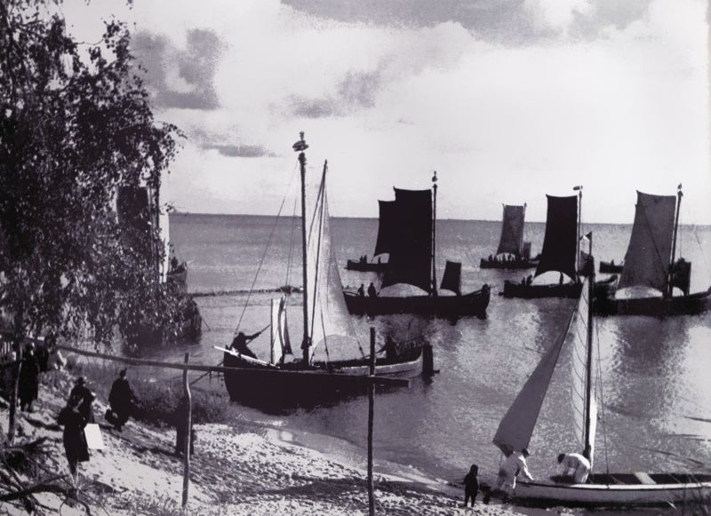
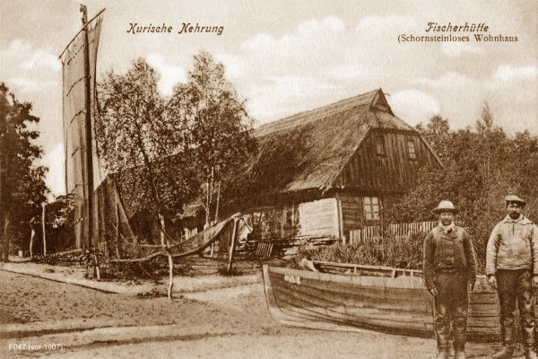
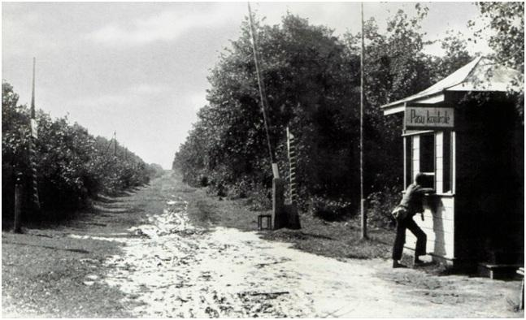

Istorija
Nuo 13 a. iki pokario
Konkretesnį vaizdą apie Kuršių nerijos raidą galime susidaryti tik nuo XIII a., Vokiečių ordinui užkariavus šią teritoriją ir pradėjus istoriniuose šaltiniuose fiksuoti įvykius, susijusius su nerijos - strateginiu požiūriu svarbios teritorijos - adaptavimu. Tuo tikslu Kuršių nerijoje buvo pastatytos kelios Ordino pilys, svarbiausioji - Rasytės (Rossitten, dab. Ribačij) - pirmą kartą paminėta 1372 m. Ji stovėjo čia iki XV a. pabaigos. Jau tuomet Kuršių nerija buvo svarbi tarpinė susisiekimo grandis tarp Marienburgo ir Rygos. Komunikacinei funkcijai užtikrinti čia buvo steigiamos smuklės, o tai lėmė ir gyvenviečių kūrimąsi. Kuršių nerijos priklausomybės Ordinui laikotarpiu iki XVI a. pradžios minimi vietovardžiai, su kuriais sietinas gyvenviečių formavimasis: Šarkuva (Sarkau), Kuncai (Kunzen), Rasytė (Rossitten), Pilkopa (Pillkopen), Nida (Nidden), Karvaičiai (Karwaiten), Nagliai (Negeln), Juodkrantė (Schwarzort), Smiltynė (Sandkrug).
XVI a. pradžia - reikšmingų permainų laikas: Ordino valstybė žlugo, o jos vietoje atsirado pasaulietinė Prūsijos kunigaikštystė, kurios integrali dalis buvo Kuršių nerija. Reformacija atnešė į šį kraštą pagarbą gimtajai kalbai, o tai reiškia, kad nuo tada iki pat XX a. vidurio bažnyčiose skambėjo ir lietuvių kalba. Įsivyravusi liuteronybė ir sunkios būties ženklais pažymėta egzistencija formavo Kuršių nerijos žmonių dvasinį pasaulį, jų moralines nuostatas, vertinant tiesą, sunkų darbą, tvarką. Be to, XV - XVI a. sankirtoje Kuršių nerijoje apsigyveno kuršininkai, kalbėję latviškai ir iki pat Antrojo pasaulinio karo ryškiausiai reprezentavę nerijos etninį savitumą. Tai buvo žvejai, skrodę Kuršmarių vandenis ypatingos konstrukcijos burinėmis valtimis - kurėnais, kurių stiebus puošė vėtrungės. Vargana egzistencija vertė kuršininkus išmokti gaudyti varnas ir vartoti jas kaip maistą bei lėmė asketišką jų būstų, aprangos stilių.
Nida - žymių žmonių pamėgta vasarvietė
XIX a. pabaigoje Nidą ėmė garsinti pamėgę čia leisti vasaras vokiečių ekspresionistai, suformavę Nidos dailininkų koloniją (Max Pechstein, Lovis Corinth, Karl Schmidt-Rottluff, Ernst Mollenhauer ir kt.), kurios "rezidencija" tapo vienas seniausių Nidoje, 1867 m. statytas, Hermanno Blodės viešbutis. Per pusę šimtmečio, kai klestėjo dailininkų draugija, H. Blodės viešbutyje pabuvojo ne tik daugybė dailininkų, bet ir literatai Hermann Sudermann, Ernst Wiechert, Agnes Miegel, Fritz Kudnig, psichoterapeutas Sigmund Freud ir kt. Tarp garbių šio viešbučio svečių buvo ir Nobelio premijos laureatas rašytojas Thomas Mann, kuris pirmą kartą atvyko į Nidą 1929 m. rugpjūčio 24 d. ir H. Blodės viešbutyje praleido keletą įsimintinų dienų. Sužavėtas Kuršių nerijos gamtovaizdžio ir Nidos žvejų kaimelio auros, nutarė čia pasistatyti vasarnamį, kuriame praleido tris vasaras (1930 - 1932 m.) ir parašė dalį tetralogijos "Juozapas ir jo broliai".
Kurortinis verslas, Kuršių nerijoje itin suklestėjęs XX a. pradžioje, tapo ekonomine alternatyva tradicinei žvejybai. Be to, kurortų augimas lėmė ir architektūrines inovacijas: greta senųjų žvejų namų, kuriuos puošė lėkiai ant stogų ir dominavo mėlyna spalva, augo nedidelės, dažnai mūrinės vilos, dideli viešbučiai, kurių pavadinimai rodė pagarbą vietinei etninei tradicijai ("Kuršių kiemas" - "Kurischer Hof", "Kuršių briedis“ - "Kurischer Elch").
Geografinė ir politinė situacija po 1923 m.
1923 m. pirmą kartą per 700 metų Kuršių nerija buvo perkirsta valstybinės sienos: atkarpa nuo Nidos iki Smiltynės tapo Lietuvos Respublikos dalimi autonominio Klaipėdos krašto sudėtyje. Tai neatnešė didelių pokyčių Kuršių nerijos žmonių gyvenime, nors dalis jų tapo Vokietijos, o dalis - Lietuvos piliečiais. Čia ir toliau klestėjo kurortinis verslas, pritraukiantis iki 10 tūkstančių poilsiautojų per sezoną. 1939 m. Lietuvai priklausiusi Kuršių nerijos dalis, kaip ir visas Klaipėdos kraštas, vėl buvo prijungti prie Vokietijos, bet šis įvykis ir netgi prasidėjęs Antrasis pasaulinis karas labai nesutrikdė čia įprasto kurortinio gyvenimo. Tačiau 1944 metų vasara Kuršių nerijai tapo lemtinga: artėjant frontui visi vietiniai gyventojai buvo priversti pasitraukti į Vokietijos gilumą ir dauguma jų čia nebesugrįžo. Staiga nutrūko ilgaamžė Kuršių nerijos kultūrinė tradicija, kurioje pynėsi vokiečių, kuršininkų, lietuvių kalbos ir papročiai. Istorijos ratas po 700 metų baigė brėžti vieną trajektoriją ir pradėjo riedėti visai nauja vėže, istorine atmintimi praturtindamas naująją patirtį.
Nuo pokario iki šių dienų

1944 m. artėjant frontui, dar vasarą, dauguma gyventojų bėgo į Vokietiją. Iki 1945 metų pradžios buvo pasitraukę praktiškai visi vietiniai gyventojai ir Kuršių nerija pradėta apgyvendinti civilių žmonių, daugiausiai iš Vidurio Rusijos. Pokario laikotarpio Kuršių nerija - tai blogas susisiekimas su žemynu, blogi keliai arba jų nebuvimas, nuniokotas ir išplėštas kraštas. Iki miesto įkūrimo veikė Nidos, Preilos ir Juodkrantės apylinkės. 1961 metų lapkričio 15 dieną išleistas LTSR Aukščiausiosios Tarybos prezidiumo įsakas "Dėl Nidos, Preilos, Juodkrantės vasarviečių likvidavimo ir Neringos respublikinio pavaldumo miesto sudarymo". Pirmojo miesto vadovo rūpesčiai buvo aprūpinti Neringą elektros energija, telefono ryšio linijomis bei rekonstruoti kelią Nida - Smiltynė. Šiuo laiku padaryta pradžia Neringos kaip kurorto vystymui. Ypatingas dėmesys buvo skiriamas pasienio režimui, gelbėjimo stoties steigimui. 1966 m. įsigaliojo specialaus landšaftinio draustinio statusas, kuris faktiškai atitiko nacionalinio parko statusą. 1970 m. pradėjo veikti Vidurinė mokykla. 1973 m. pradėjo veikti Muzikos mokykla. 1972 m. pastatyta valgykla ir prekybos centras Juodkrantėje. Pastatytas Nidos vidurinės mokyklos priestatas, sporto salė. 1976 m. įsteigtas Valstybinis miško parkas. 1979 m. Nidoje įsteigta SSD "Žalgiris" Neringos miesto kompleksinė vaikų - jaunimo sporto mokykla. Dar prieš įkuriant sporto mokyklą, Nidos buriuotojai garsėjo Lietuvoje ir buvusioje TSRS. 1988 m. Nidos ir Juodkrantės bažnyčios grąžintos evangelikų liuteronų parapijoms. 1988 m. rugsėjo mėnesį Neringoje susikūrė "Sąjūdis". 1991 m. LR Aukščiausiosios tarybos nutarimu įsteigtas Kuršių nerijos nacionalinis parkas. 2001 m. priduotas bene didžiausias infrastruktūros objektas Lietuvoje - Juodkrantės krantinė.